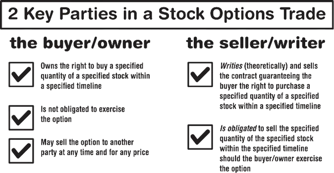
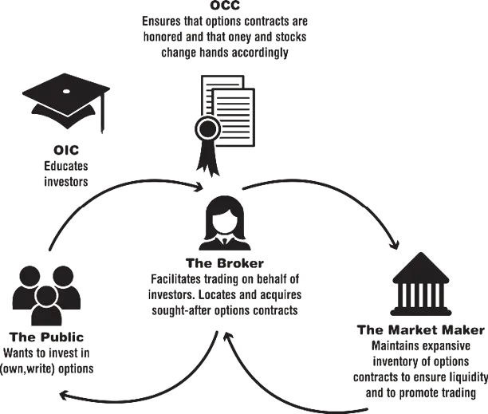

Throughout this book, we’ll be talking about stock options. However, there are other types of options which you may delve into at a later time. Here’s a definition of each from the folks at optionstrading.org.
But let’s keep it simple for now. Consider this scenario as a way to understand the basic premise of stock options trading.
I know a fashion designer who is an eccentric genius. She makes incredible dresses that you just can’t find anywhere else. There’s nothing like them! She makes them all by hand, and she does all the work herself. The only drawback is that she only makes these dresses in the summer, and she only makes about 10 of them each year.
It’s the middle of winter, and I’ve made a deal to buy one of this designer’s summer dresses for a price of $100. I’ve guaranteed the purchase using a contract. The contract states that I have the right to purchase a dress at $100 at any time before the third Friday of September. To secure my option to buy the dress, I paid a fee, or premium, of $50.
Note : This $50 is not a deposit or down payment. It will not be deducted from the $100 I will eventually pay to own a dress. The $50 premium is merely the price of my right to buy the dress for $100 before the third Friday in September
In July, I decide to exercise my option to buy a dress. Per my contract, I pay $100 for the dress. On the same day I decide to go to the designer’s Etsy page and take a look at the other dresses she’s selling. They are all priced at $200. I decide, rather than keeping the dress, to sell it to another party for $200. Since I paid only $100 plus the premium payment of $50, I profited $50 from my purchase of an option
Options are contracts. They entitle a party to purchase or sell a specific asset (stock, real estate, merchandise) for a specific price within a certain window of time. They also oblige a separate party to sell or purchase the specific asset. For instance, in the example above, just as my option contract guaranteed me the right to buy the dress for $100, the dress maker was obliged to sell the dress for $100. In every option contract there is a buyer and a seller. One party, either the buyer or the seller, has an obligation to participate in a particular transaction per the dictates of the options contract. The other party, either the buyer or the seller, has the option to participate in a particular transaction per the dictates of the options contract. In the example above, I paid $50 for the option to buy a dress for $100 before the third Friday in September. Just because I owned this option does not mean that I was obliged to execute it. I was the owner or buyer of the option. The dressmaker, who was obligated to sell me the dress, was the writer or seller of the option.

If you’re thinking about delving into the world of options, you’re
probably already familiar with stocks. But, just as a refresher – a stock is a
piece of a company. When a company decides to be a “public” company, it
issues shares of stock for purchase by the general public. The more “stocks”
or pieces you purchase, the more of the company you own, though, in most
cases, unless you own thousands of shares, your piece is pretty small.
Now that you are technically a co-owner of this company, you are
awarded a portion of the profits. If the company is performing at its best,
your stock goes up in price and you see a profit, usually paid to you in the
form of dividends, which are sums of money paid out to investors on a
regular basis (usually quarterly). But if the company isn’t performing well
for one reason or another, you assume a loss. In this case, the dividends you
receive are lower or, in some cases, you don’t receive any at all.
In order to trade options, you DO NOT need to own stock in the company
with which you are trading. However, if you’re the writer/seller of the
option, then owning the stock will lessen your risk. These are called
“covered” options and we’ll talk about them in a later chapter.
Though option contracts have been around in some form since the days of ancient Greece1 , it wasn’t until 1973 that the trading of stock options became formally institutionalized in the Chicago Board Options Exchange (CBOE). Prior to the CBOE, the general public was highly mistrustful of trading stock options. Contracts were difficult to enforce, and even brokers had a difficult time accurately pricing options. The CBOE saw to it that stock option contracts were all standardized and that a clearing corporation was formed (Options Clearing Corporation or OCC) that would be responsible for ensuring that contracts were enforced. There was still a lot of doubt about whether options trading would catch on with the general public, but after a few years in business, the CBOE was buzzing with trading activity. Since that time, options trading has become a persistent facet of major securities exchanges across the globe.
Currently, there are a total of six options exchanges in the United States. They all have excellent websites where new and experienced traders can gather general information about options trading as well as more specific information on the listings they handle. These sites are good tools and should be perused as you begin your options journey.
Now, with six markets, the process of options trading seems complicated right off the bat. However, some key participants in your options trading venture will help you navigate these markets and better understand the entire process.
If you already have a stock broker, chances are that he or she can also handle options trading for you. However, some brokers specifically deal in options. As with stocks, you simply instruct them as to what kind of transaction you’d like to carry out, and they do the legwork and charge you a commission to put the trade in motion. You can ask them to buy new contracts, sell contracts you already own, or write new contracts to sell. You can also provide them with certain orders about buying and selling at particular prices. In all, they can manage all aspects of your options portfolio.
As you enter the world of options trading, look for a full-service broker
rather than a discount broker. The latter merely takes orders and executes
them. The former is more expensive commission-wise but should take the
time to meet with you personally and get to know your financial
circumstances and investment goals.
Once you feel you are sufficiently experienced in the field of options
trading and have become quite hands-on in your trading, you may decide to
go with the less-expensive option of a discount broker.
The market maker isn’t a person you’ll ever meet or even see. Rather, the term refers to a broker-dealer firm that takes on the risk of holding multiple shares of a particular security so that trading in that security can happen. In other words, the market maker does exactly as the name suggests – provides a market for your options order. They are there to keep the markets running smoothly and to ensure a certain amount of liquidity. To accomplish that, they step in if there are no public orders to match a required trade by maintaining a sizeable and diverse portfolio of options contracts.
For example, suppose you want to buy options contracts for Google, but
no one from the general public is selling at the moment. The market maker
steps in and sells you those options from its own portfolio.
If not for market makers, there would be far fewer transactions occurring,
it might be difficult to buy or sell, and the options available would be
severely limited.
The Options Clearing Corporation (OCC) is the firm that guarantees that options sellers meet their obligations and complete their transactions. As a clearing house, it literally moves billions of dollars a day, which makes it one of the largest equity derivatives clearing organizations in the world. You won’t ever need to contact them, most likely, but it’s good to know they’re there to make trades run smoothly.
This is an investor education partnership formed by the six options exchanges mentioned previously. For those new to the options market, the OIC is a wonderful tool and its website provides a plethora of information about listed stock options. Check it out at www.optionscentral.com.

As you see, options trading has gained a lot of attention over the past few decades. There’s no definitive explanation for its resounding success. Just as in any other product or pursuit, there was no way to be sure of that success prior to testing the market. Part of the appeal of options trading, no doubt, is the potential to realize faster and larger profits than in the traditional stock market. Options also provide a way for investors to participate in the stock market with less investment. That’s because you don’t have to own shares of a stock to trade options associated with that stock. If an investor is familiar with a certain stock and believes she can predict its movement, then purchasing an option allows that investor a chance to capitalize on that stock’s behavior without having to purchase the stock outright.
Not everyone who “plays” the stock market is interested in trading
options. Depending on your financial portfolio as well as your goals, your
broker may advise against it due to the risk. So whether or not you get
involved depends on just how willing you are to take a chance with your
cash.
Indeed, the stock market is simpler to navigate than the options market.
In general, you only have to worry about one thing – whether the stock is
going up or down. With options, as you’ll see in future chapters, you have
to get three things right – the direction it’s moving, the timing, and the
magnitude. In stock transactions, losses tend to be smaller – you rarely lose
100% of your investment as you might with options. Furthermore, if a stock
is in a losing position, you can usually just wait it out until it gets back to
fair market value.
Options can be scary, but they do have their advantages. Investing in
options allows you to tie up a lot less of your cash on hand, as you’ll see
when we discuss strategies in a later chapter. Hence, options have greater
leveraging power. The potential for higher returns is certainly present as
well, particularly with less cash outlay. Finally, options are a very flexible
investment tool and create more investment alternatives, ideal for those who
want a diverse portfolio. Of course, neither stocks nor options carry with
them any sort of guarantee. It’s your job, along with your broker, to
determine what kind of risks you are able to take and if you can live with
the potential consequences. That’s why books like this, which outline the
basics and explain the strategies, are essential.